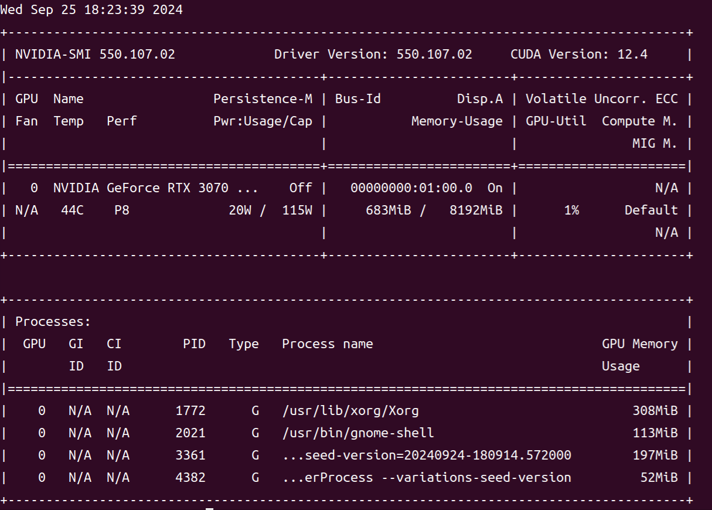
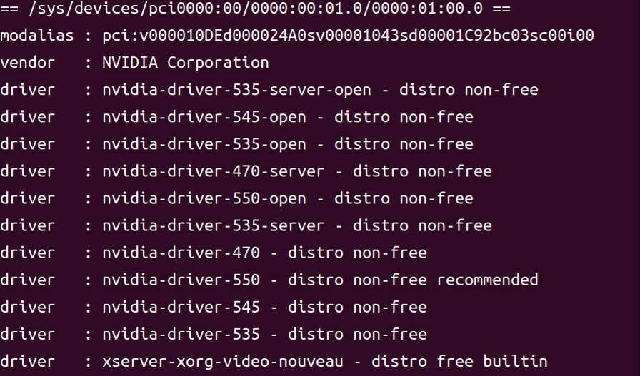
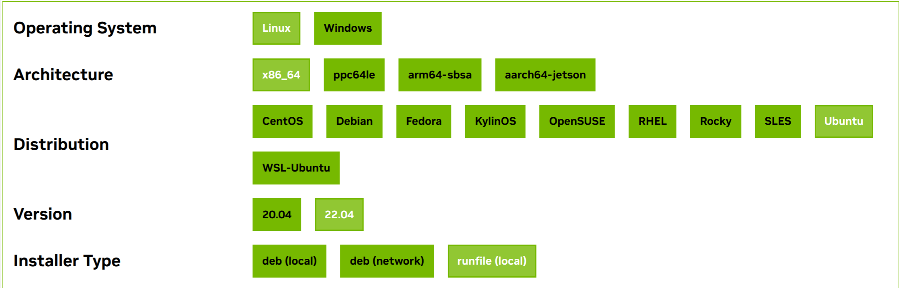
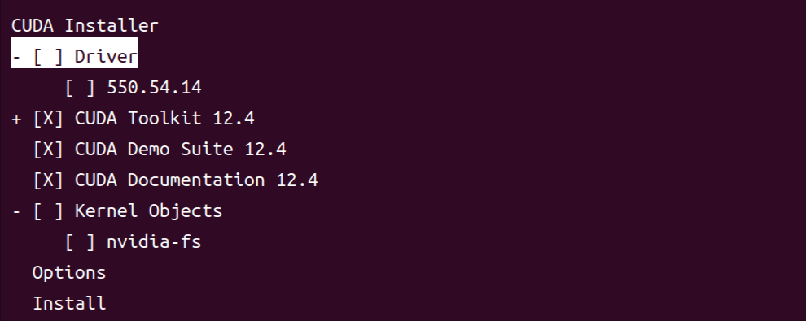
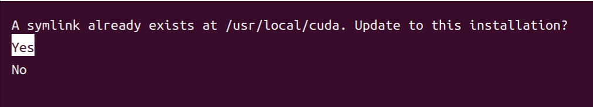
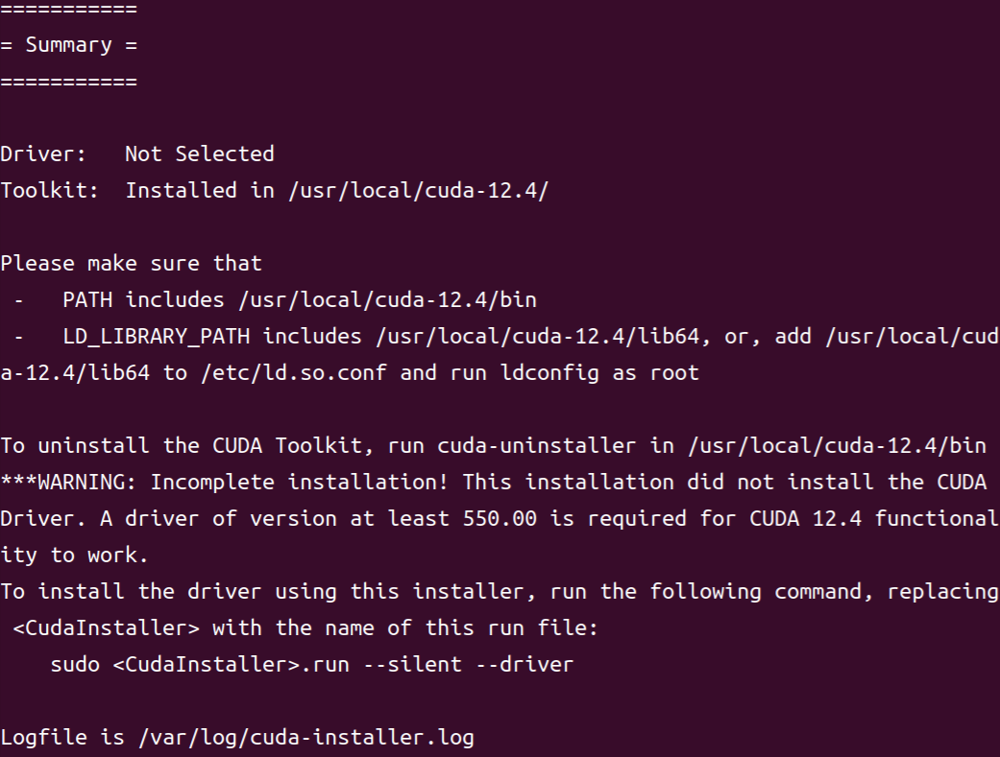
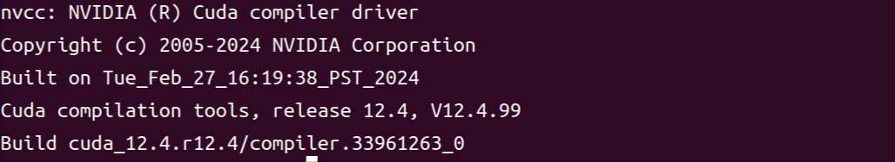
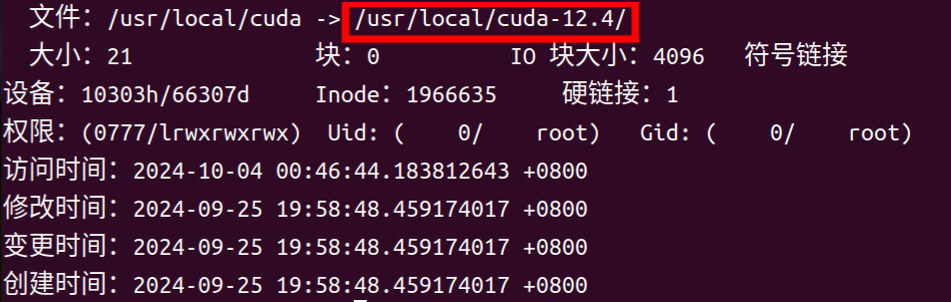
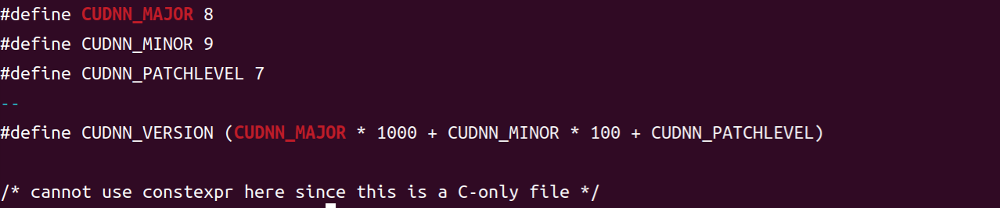

因为最近一个项目需要cuda11，而电脑上装的是cuda12，所以需要回退一下cuda版本。偶然间找到了一个可以多版本cuda切换的方法，感觉非常有用，遂配置一下。
卸载旧的驱动以及cuda（可选）
卸载cuda执行sudo /usr/local/cuda-12.2/bin/cuda-uninstaller，其中版本号对应自己文件夹下的即可。删除后将cuda-12.2文件夹也rm -rf即可。
卸载驱动执行sudo apt --purge remove nvidia*，—purge参数可以在删除包的同时删除配置文件。
安装驱动
首先安装必要的工具：1
2
3
4sudo apt update
sudo apt install g++
sudo apt install gcc
sudo apt install make
然后看一下自己有没有装nv显卡驱动，执行nvidia-smi，出现以下界面则表示已安装：

如果没有，则需要先安装一下。首先执行ubuntu-drivers devices可以查看电脑适合的显卡驱动版本：

可以看到我的电脑推荐安装550版本，那么就sudo apt install nvidia-driver-550即可。安装后重启电脑，使用nvidia-smi命令，出现上述窗口代表安装成功。
安装cuda
执行nvidia-smi，右上角的cuda version显示了当前电脑gpu支持的最高cuda版本（安装小于等于这个版本的cuda均可）。然后到CUDA Toolkit Archive下载对应版本即可，加载可能非常慢，耐心等待（有时候能不能打开还是很玄学的）。例如我选择了12.4版本，那么如下勾选：

随后会获得两个命令，将其cv到terminal执行即可。然后就进行漫长的下载..wget下载好后执行.run文件即可。
运行后，首先选择continue，然后输入accept，然后会出现如下界面：

由于我们已经安装了驱动，因此取消勾选driver即可，然后选择install。
如果我们的已经安装了一个另一个版本的cuda，那么会出现下面的界面:

Yes即把当前版本切换为新安装的，No即暂时不切换。
等待一段漫长的时间后，应该会得到这样一个界面：

现在需要配置一下环境。先sudo gedit ~/.bashrc（gedit(GNOME text editor)，用于编辑文本信息），然后将下面三条配置添加到最下面：1
2
3export PATH=$PATH:/usr/local/cuda/bin
export LD_LIBRARY_PATH=$LD_LIBRARY_PATH:/usr/local/cuda/lib64
export LIBRARY_PATH=$LIBRARY_PATH:/usr/local/cuda/lib64
然后保存，退出即可。然后执行source ~/.bashrc使环境生效即可。这时候执行nvcc -V，即可显示当前cuda版本：

安装cudnn
首先到cudnn官网下载对应版本的cudnn，下载下来应该是一个tgz文件，然后解压即可。然后更改一下/usr/local/cuda-xx.x里include目录的权限1
2cd /usr/local/cuda-xx.x
sudo chmod 666 include
然后进入到解压后的cudnn目录的上级目录，执行官网提供的以下操作，将一些必要的东西放到cuda-xx.x文件夹里。1
2
3sudo cp cudnn-*-archive/include/cudnn*.h /usr/local/cuda-xx.x/include
sudo cp -P cudnn-*-archive/lib/libcudnn* /usr/local/cuda-xx.x/lib64
sudo chmod a+r /usr/local/cuda-xx.x/include/cudnn*.h /usr/local/cuda-xx.x/lib64/libcudnn*
多版本cuda切换
/usr/local下应该会有一个cuda文件夹，这个文件夹软链接向当前使用的cuda版本（类比于快捷方式），因此切换版本只需要切换其软链接指向即可。
使用stat /usr/local/cuda命令可查看当前使用的版本号：

要切换版本，首先删除当前cuda软链接：sudo rm -rf /usr/local/cuda
然后新建软链接指向想要的版本即可：sudo ln -s /usr/local/cuda-xx.x /usr/local/cuda
完成这些操作后，输入以下命令，即可查看cudnn版本号1
sudo cat /usr/local/cuda/include/cudnn_version.h | grep CUDNN_MAJOR -A 2

同样也可以使用nvcc -V查看当前cuda版本。